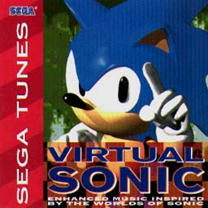
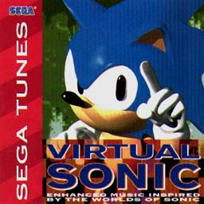

SEGA TUNES
VIRTUAL SONIC


SEGA TUNES
VIRTUAL SONIC

|
発売元：Delta Music（アメリカ盤） |
|
ソニック＆ナックルズやソニック・スピンボールのモチーフから作ったもの。 |
|
01. CHAOS JAM 02. KNUCKLEMANIA 03. BETTLE OF THE BADNICKS 04. BOSS OPERA 05. RETURN TO TOXIC CAVES 06. SONIC AND KNUCKLES THEME 07. ROBOTONIK'S REVENGE 08. METAL SONIC 09. SANDPOLIS 10. SPINBALL THEME 11. CITY IN THE CLOUDS 12. SONIC TRIUMPHANT |
|
・次の作品を見てみたいっす!! ・関連CD＜海外編＞のページへ ・Music CDのページへ ・Sound Web Siteのトップページへ |